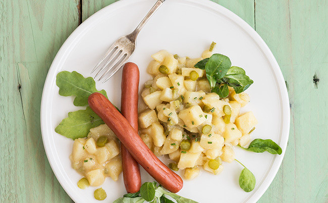

Nombre: Andrea Marili Gaxiola Gonzalez
Grupo: 4BPM
Fecha: 15 de febrero 2024
Ensalada alemana de patata o kartoffelsalat

Ingredientes:
- 1 kg de patatas
- 50 g de pepinillos
- 60 ml de vinagre de vino blanco
- 30 ml de mostaza de Dijon
- 60 ml de aceite de oliva virgen extra
- 300 ml de caldo de pollo
- 8 salchichas tipo alemanas
- 1 manojo de cebollino picado fino
- canónigos
- sal y pimienta
Procedimiento:
- Ponemos una olla al fuego con sal para cocer las patatitas con la piel, las dejaremos cocer hasta que estén tiernas.
- Despues las reservamos y las dejamos enfriar antes de pelarlas
- Picamos los pepinillos
- Una vez frías las patatas, las pelamos y cortamos en rodajas, y las ponemos en un plato
- Por otra parte calentamos el caldo en un cazo o al microondas
- Cuando cueza unos cinco minutos a fuego lento le vamos agregando al mismo tiempo que removemos con una cuchara la mezcla de vinagre, aceite y mostaza o puede ser cuatro cucharadas de mayonesa
- Vertimos esta mezcla encima de las patatas cocidas y los pepinillos picados y revolvemos todos los ingredientes
- Añadimos sal y cebollin
- Y por ultimo añadimos las salchichas cortadas a la mezcla y tenemos nuestra kartoffelsalat
"Cuando todo parezca ir en tu contra, recuerda que el avión despega contra el viento".-Henry Ford.